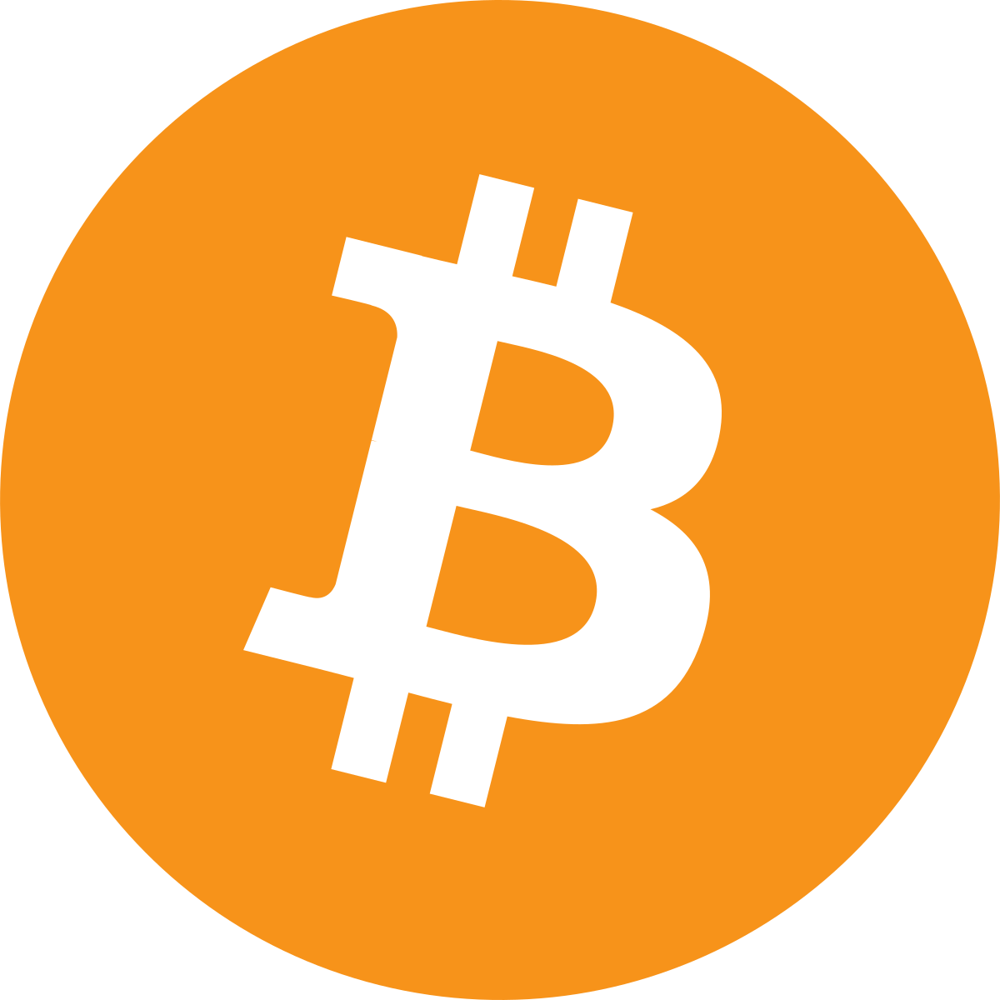

Criptomonedas de mayor potencial
Polkadot
Polkadot es un protocolo de código abierto desarrollado para ser accesible a todo el mundo cuyo objetivo es permitir la evolución de la tecnología blockchain. El objetivo de Polkadot, es el de introducir interoperabilidad entre diferentes cadenas de bloques, permitiendo que entre ellas puedan intercambiar datos y así conseguir desarrollar servicios y aplicaciones más potentes. Como cualquier otro proyecto blockchain, Polkadot tiene su propio token que recibe el nombre de DOT. La idea de Polkadot es simplificar el diseño para la creación de aplicaciones, productos y servicios entre diferentes blockchain.
Leer másCardano
Cardano es el primer proyecto de blockchain con su propia criptomoneda que parte de una filosofía académica y científica, dado que su desarrollo se basa en un equipo global y multidisciplinario, donde encontramos ingenieros, matemáticos, científicos y profesionales de las finanzas y negocios y está supervisado por la Fundación Cardano. La visión del equipo de Cardano es conciliar las necesidades de los usuarios con la de los reguladores con miras a que haya una mayor inclusión financiera, para proporcionar un acceso abierto a cualquier servicio financiero.
Leer másNoticias de Criptomonedas
-

Bitcoin alcanza nuevo máximo
Bitcoin ha alcanzado un nuevo máximo histórico de $60,000. Leer más -

Ethereum se prepara para la actualización 2.0
La actualización de Ethereum 2.0 promete mejorar la escalabilidad y la seguridad. Leer más -

Ripple enfrenta nueva demanda
Ripple Labs enfrenta una nueva demanda de la SEC por la venta de valores no registrados. Leer más